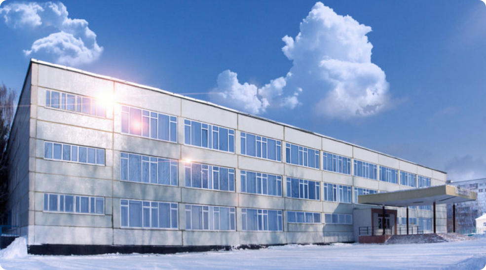

Муниципальное бюджетное общеобразовательное учреждение «Лицей современных технологий управления № 2» г. Пензы) создано на основании Постановления Главы города Пензы от 30.08.1999. №1562 "О реорганизации муниципальной средней общеобразовательной школы №2 г.Пензы".
В 2011 году образовательная организация реорганизована путем присоединения к нему МОУ СОШ № 24 (постановление администрации города Пензы от 13.05.2011г. №533 "О реорганизации муниципального общеобразовательного учреждения "Лицей современных технологий управления №2 г.Пензы").

Структура и органы управления образовательной организацией
В ЛСТУ формируются коллегиальные органы управления, к которым относятся: Управляющий совет, Общее собрание трудового коллектива, Педагогический совет ЛСТУ, Общешкольное родительское собрание, Совет лицеистов.
Директор ЛСТУ в соответствии с действующим законодательством и настоящим Уставом назначается Учредителем ЛСТУ.
Директор ЛСТУ в рамках своей компетенции:
- действует от имени ЛСТУ без доверенности;
- представляет интересы ЛСТУ в государственных и муниципальных органах, организациях, учреждениях, предприятиях;
- планирует и организует образовательный процесс, осуществляет контроль за его ходом и результатами, несет ответственность за качество и эффективность работы ЛСТУ;
- разрабатывает штатное расписание в пределах плана финансово-хозяйственной деятельности, численность штата и представляет его на утверждение Учредителю;
- обеспечивает рациональное использование финансовых средств в пределах плана финансово-хозяйственной деятельности, своевременно представляет отчет и иные сведения об использовании бюджетных средств;
- обеспечивает соблюдение норм охраны труда и техники безопасности;
- издает приказы в пределах своей компетенции;
- осуществляет подбор, прием на работу и увольнение работников, заключение и расторжение трудовых договоров;
- распределяет должностные обязанности между работниками;
- дает обязательные для исполнения работниками ЛСТУ указания и осуществляет проверку их исполнения;
- поощряет работников и налагает на них дисциплинарные взыскания;
- заключает договоры с юридическими и физическими лицами;
- утверждает план работы ЛСТУ, а также анализирует результаты деятельности в соответствии с утвержденным планом;
- организует хозяйственную деятельность ЛСТУ;
- несет личную ответственность перед Учредителем за неисполнение или ненадлежащее исполнение возложенных на ЛСТУ функций;
- выдает доверенности;
- распоряжается имуществом ЛСТУ в пределах прав, предоставленных ему договором между Учредителем и ЛСТУ;
- является председателем педагогического совета;
- выполняет другие полномочия в соответствии с действующим законодательством и иными нормативными правовыми актами, настоящим Уставом, трудовым договором и должностными обязанностями.
Высшим органам самоуправления ЛСТУ является Управляющий совет, который состоит из избранных, кооптированных и назначенных членов и имеет управленческие полномочия по решению ряда важных вопросов функционирования и развития ЛСТУ, определенные Положением об Управляющем совете ЛСТУ и настоящим Уставом. Количество членов совета 9 человек. Состав Управляющего совета ЛСТУ формируется из представителей педагогических работников, родителей (законных представителей), обучающихся, которые являются избираемыми членами совета, а также членами совета могут являться представитель Учредителя и директор ЛСТУ. Выборы в Управляющий совет ЛСТУ проводится один раз в два года.
К компетенции Управляющего совета ЛСТУ относятся:
- участие в создании оптимальных условий для организации образовательного процесса в ЛСТУ;
- организация общественного контроля за охраной здоровья участников образовательного процесса, за безопасными условиями его осуществления;
- оказание практической помощи администрации ЛСТУ в установлении функциональных свя-зей с учреждениями культуры и спорта для организации досуга обучающихся;
- установление режима занятий обучающихся по представлению Педагогического совета, времени начала и окончания занятий;
- рассмотрение жалоб и заявлений обучающихся, родителей (законных представителей) на действия (бездействие) педагогического и административного персонала ЛСТУ;
- содействие привлечению внебюджетных средств для обеспечения деятельности и развития ЛСТУ;
- рассмотрение вопросов создания здоровых и безопасных условий обучения и воспитания в ЛСТУ;
- согласование компонента образовательной организации федерального государственного образовательного стандарта общего образования, предпрофильного обучения (по представлению директора ЛСТУ после решения Педагогического совета ЛСТУ);
- оказание содействия в создании оптимальных условий для осуществления образовательного процесса и форм его организации в ЛСТУ, в повышении качества образования, в наиболее полном удовлетворении образовательных потребностей населения;
- участие в подготовке и утверждение публичного (ежегодного) доклада ЛСТУ;
- заслушивает отчет директора ЛСТУ по итогам учебного года.
Общее собрание трудового коллектива.
Трудовой коллектив составляют все работники, участвующие своим трудом в его деятельности на основе трудового договора. Общее собрание трудового коллектива ЛСТУ является постоянно-действующим органом общественного самоуправления в учреждении, который включает в себя всех работников ЛСТУ.
К компетенции общего собрания трудового коллектива относится:
- принятие Коллективного договора, Правил внутреннего трудового распорядка;
- принятие Устава ЛСТУ, дополнений и изменений к нему;
- принятие Положения об Управляющем совете;
- выдвижение коллективных требований работников ЛСТУ и избрание полномочных предста-вителей для участия в разрешении коллективного трудового спора;
- по инициативе директора ЛСТУ на рассмотрение могут быть вынесены и иные вопросы.
Постоянно действующим коллективным руководящим органом, объединяющим педагогических работников ЛСТУ, для рассмотрения основополагающих вопросов образовательного процесса, повышения профессионального мастерства и творческого роста педагогов, управления педагогической деятельностью является Педагогический совет ЛСТУ.
Компетенция Педагогического совета:
- разрабатывает и принимает концепцию развития ЛСТУ, локальные акты;
- обсуждает и утверждает планы работы ЛСТУ;
- выбирает и утверждает образовательные программы для использования в работе ЛСТУ;
- обсуждает вопросы содержания, форм и методов образовательного процесса;
- организует выявление, обобщение, распространение, внедрение педагогического опыта;
- заслушивает информацию и отчеты педагогических работников ЛСТУ, доклады представителей организаций и учреждений, взаимодействующих со ЛСТУ по вопросам образования и воспитания подрастающего поколения, в том числе сообщения о проверке соблюдения санитарно-гигиенического режима ЛСТУ, об охране труда, здоровья и жизни учащихся и другие вопросы образовательной деятельности ЛСТУ;
- принимает решение о проведении промежуточной аттестации, о допуске учащихся к государственной итоговой аттестации выпускников ЛСТУ, переводе в следующий класс или оставлении на повторный курс обучения; выдаче соответствующих документов об образовании, о награждении учащихся за успехи в обучении грамотами, похвальными листами или медалями;
- принимает решение о представлении к награждению работников ЛСТУ отраслевыми и государственными наградами.
Общешкольное родительское собрание создается в целях содействия семье и ЛСТУ. Из его состава избираются председатель и секретарь.
В компетенцию Общешкольного родительского собрания входит:
-содействие обеспечению оптимальных условий для организации образовательного процесса;
-координация деятельности классных родительских комитетов;
-проведение разъяснительной и консультативной работы среди родителей (законных представителей) обучающихся об их правах и обязанностях;
- содействие в проведении общешкольных мероприятий;
- участие в подготовке ЛСТУ к новому учебному году;
-совместно с руководством ЛСТУ контроль организации питания и медицинского обслуживания;
-оказание помощи в организации и проведении Общешкольных родительских собраний;
-обсуждение локальных актов ЛСТУ, по вопросам, входящим в компетенцию родительского комитета;
-участие в организации безопасных условий осуществления образовательного процесса, выполнения санитарно-гигиенических норм и правил;
-взаимодействие с общественными организациями по вопросу пропаганды школьных традиций, уклада школьной жизни.
Реализуемые уровни образования:
начальное общее образование
основное общее образование
среднее общее образовании
Формы образования:
очная
очно-заочная
заочная
Нормативные сроки обучения:
начальное общее образование - 4 года;
основное общее образование - 5 лет;
среднее общее образование - 2 года
Язык преподавания - русский
Учебный план
Численность обучающихся по реализуемым образовательным программам:
1-4 классы - 786 человек
5-9 классы - 805 человек
10-11 классы - 242 человек
Реализация программы «Профильная школа» в лицее осуществляется:
Основное общее образование.
Предпрофильная подготовка учащихся 8-9 классов через модель предметно- поточной организации обучения, где соблюдаются принципы профильной направленности, преемственности, адекватности.
Среднее общее образование.
Сформированы следующие профильные направления:
- физико-математическое
- социально-экономическое
- химико- биологическое
В лицее создана система профилизации обучения, ориентированная на индивидуализацию обучения и социализацию обучающихся с учётом реальных потребностей рынка труда, а именно:
- удовлетворение образовательных потребностей выпускников, обеспечение расширенного изучения профильных предметов, установление равного доступа к полноценному образованию разным категориям обучающихся в соответствии с их способностями ;
- взаимодействие в ВУЗами (заключены договоры с ПГУ, ПГУАС, ПГТА, ВШЭ г.Москва) ;
- проведение мониторинга эффективности профильного обучения;
- организация повышения квалификации и переподготовки кадров для работы в профильных классах;
- обеспечение материально-технического оснащения предпрофильной подготовки и профильного обучения.
Администрация и педагогический коллектив муниципального бюджетного общеобразовательного учреждения "Лицей современных технологий управления № 2" г.Пензы.
ПосмотретьСведения о библиотеке
Библиотека – гарант равных возможностей читателей на свободный доступ к информации, достижениям мировой и национальной культуры, развития личности в соответствии с особенностями возраста через чтение. Библиотека создаёт и поддерживает комфортную информационно-образовательную и воспитательную среду школы.
Основные направления деятельности школьной библиотеки:
содействие педагогическому коллективу в развитии и воспитании детей;
обеспечение учебного и воспитательного процесса всеми формами и методами библиотечного и информационно-библиографического обслуживания;
привитие любви к книге и воспитание культуры чтения, бережного отношения к печатным изданиям;
привлечение каждого учащегося к систематическому чтению с целью успешного изучения учебных предметов, развития речи и мышления, познавательных интересов и способностей.
Информация о количестве спортивного оборудования
* Здание по адресу ул. Бакунина, д.88а - 1 спортивный зал, оборудован необходимым спортивным инвентарем и шведскими стенками. Есть танцевальный зал для занятий хореографией.. Уличной спортивной площадки нет. Подробнее (фрагмент фотоотчета).
* Здание по адресу ул. Бакунина, д. 115 - 1 спортивный зал, оборудованный необходимым спортивным инвентарем и шведскими стенками. В здании так же располагается зал греко-римской борьбы, оборудованный необходимым спортивным инвентарём и борцовским ковром. Есть огороженная прилегающая территория для прогулок и уличная спортивная площадка для спортивных игр. На территории располагается хоккейная коробка, футбольное поле, стритбольная площадка, л/а беговая дорожка, площадка для пляжного волейбола, уличные динамические тренажёры. Имеется бассейн с душевыми и раздевалками. Чаша бассейна 12м. три дорожки для плавания. Подробнее (фрагмент фотоотчета).
* Здание по адресу ул. Бакунина, д. 115а, ФОК «Центральный» - 1 спортивный зал, оборудованный необходимым спортивным инвентарем и шведскими стенками. Две раздевалки и душевые. 156 посадочных мест.
Сведения о средствах обучения и воспитания (информация об оборудовании в кабинетах)
С сентября 2016 г. наша Школа стала участником городского мегапроекта "Мобильное электронное образование", что позволяет использовать новые образовательные технологии на уроках. Среди нововведений большая интерактивная панель, общешкольная wi-fi сеть для педагогов и учащихся, обновленная версия общегородского электронного журнала / дневника.
Информация о наличии и условиях предоставления стипендий, в том числе локальные нормативные акты
МБОУ ЛСТУ №2 не предоставляет обучающимся стипендий
Информация о наличии общежития, интерната
МБОУ ЛСТУ №2 отсутствуют общежития
Информация о количестве жилых помещений в общежитии, интернате для иногородних обучающихся
МБОУ ЛСТУ №2 не предоставляет иногородним обучающимся жилых помещений
Копия локального нормативного акта, регламентирующего размер платы за пользование жилым помещением и коммунальные услуги в общежитии
МБОУ ЛСТУ №2 отсутствуют общежития
Информация об иных видах материальной поддержки обучающихся
МБОУ ЛСТУ №2 не предоставляет обучающимся стипендий
На данный момент вакантных мест нет.
Информация о специальных условиях для обучения инвалидов и лиц с ограниченными возможностями.
Специально оборудованные учебные кабинеты - 0
Обьекты для проведения практических занятий, приспособленных для использования инвалидами и лицами с ограниченными возможностями здоровья - 4 кабинета
Библиотека приспособленная для использования инвалидами и лицами с ограниченными возможностями здоровья - 2 библиотеки
Обьекты спорта, приспособленные для использования инвалидами и лицами с ограниченными возможностями здоровья - 4 объекта (2 спортивных зала, 1 уличный спортивный комплекс, ФОК "Центральный")
Обеспечение беспрепятственного доступа в здание образовательной организации - 1 пандус.
Средства обучения и воспитания, приспособленные для использования инвалидами и лицами с ограниченными возможностями здоровья Специальные условия питания Специальные условия охраны здоровья Доступ к информационным системам и информационно-телекоммуникационным сетям, приспособленным для использования инвалидами и лицами с ограниченными возможностями здоровья Электронные образовательные ресурсы, приспособленные для использования инвалидами и лицами с ограниченными возможностями здоровья Наличие специальных технических средств обучения коллективного и индивидуального пользованияИнформация о заключенных и планируемых к заключению договорах с иностранными и (или) международными организациями по вопросам образования и науки
В 2021-2022 году заключенных договоров по вопросам образования - нет
Информация о международной аккредитации образовательных программ
В 2021-2022 году информации о международной аккредитации образовательных программ - нет
Историческая справка
Муниципальное общеобразовательное учреждение «Лицей современных технологий управления № 2» города Пензы является правопреемником одного из старейших учебных заведений города, средней общеобразовательной школы № 2, рождение которой относится к 1862 году, когда в Пензе было открыто женское училище II разряда, готовившее домашних учительниц. После реорганизации 1918 года она стала единой трудовой школой №9 первой и второй ступени, а с 1921 года – школой № 2, и с тех пор своего номера не меняла, менялись учителя, учащиеся, менялись времена и нравы, но оставались сложившиеся за многие десятилетия традиции. И одна из них «хорошо учить и хорошо учиться».
В конце 90-х годов XX века в обществе сформировалось устойчивое мнение о необходимости дополнительной специализированной подготовки старшеклассников для прохождения вступительных испытаний и дальнейшего образования в высших учебных заведениях. Традиционная непрофильная подготовка старшеклассников в общеобразовательных учреждениях привела к нарушению преемственности между школой и высшими учебными заведениями, породила многочисленные подготовительные отделения, репетиторство, платные курсы и пр.
Многолетняя практика показала, что, начиная с позднего подросткового возраста, в системе образования должны быть созданы условия для реализации интересов, способностей детей, их дальнейших жизненных планов.
Эти позиции привели к созданию в ноябре 1999 года нового общеобразовательного учреждения в городе Пензе – Лицея современных технологий управления № 2. Муниципальное общеобразовательное учреждение «Лицей современных технологий управления №2» г. Пензы (далее «ЛСТУ») – общеобразовательное учреждение, реализующее общеобразовательные программы начального общего, основного общего и среднего (полного) общего образования, обеспечивающее дополнительную (углубленную) подготовку обучающихся по предметам технического и естественно-научного профиля.
Объекты спорта
Одним из приоритетных направлений работы собственной столовой лицея является организация рационального питания учащихся Лицей предоставляет до 5-6 альтернативных обедов в меню каждый день. Оздоровление детей путем включения в рацион школьников молока и молочных продуктов осуществляется в рамках реализации муниципальной программы «Школьное молоко». Учащиеся 1-7 классов 3 раза в неделю получают молоко и кисломолочные продукты. B целях реализации доступности питания в лицее реализуется муниципальная программа «Многодетная семья», согласно которой бесплатным питанием обеспечено 107 учащихся из многодетных семей. В рамках реализации программы «Совершенствование питания» учащиеся из малообеспеченных семей (58 человек), а также дети с ограниченными возможностями здоровья (15 человек) и учащиеся 1-4 классов (707 человек) получили дотацию на питание из бюджета города с сентября 2012г. по март 2013г
Конкурентоспособность
Лицей - победитель конкурса общеобразовательных учреждений, активно внедряющих инновационные образовательные программы в рамках приоритетного национального проекта «Образование» (2006, 2008 гг.);
Лицей включен в реестр «Всероссийской Книги Почёта» (2010-2011г.);
Лицей - дипломант программы «100 лучших товаров России» (2009г.);
Лицей – занесен на Доску Почета Ленинского района города Пензы (2008-2011гг.);
Лицей – лауреат Национальной образовательной программы «Интеллектуально-творческий потенциал России» (2012г., информация об этом опубликована в книге «Ими гордится Россия»);
Лицей – победитель областного конкурса на лучшую постановку физкультурно-оздоровительной и спортивно-массовой работы среди общеобразовательных учреждений Пензенской области (2011г.);
Лицей – победитель областного смотра-конкурса в сфере организации летнего отдыха и занятости детей и подростков в номинации «Лагеря с дневным пребыванием учреждений образования» (2010г.);
Лицей – победитель областного конкурса «Лучший сайт общеобразовательных учреждений Пензенской области» (2011г);
Лицей – победитель городского конкурса на лучшую организацию здоровьесберегающей среды (2012г.);
Лицей – победитель городского конкурса проектов на создание Технического центра на базе образовательного учреждения (2011г.);
Лицей – победитель городского конкурса на лучшую организацию системы оценки качества образовательного процесса (2011г.);
Лицей – победитель городского конкурса общеобразовательных учреждений на лучшую организацию школьную питания (2012г.);
Лицей – победитель городского конкурса «Лучшая реклама школьного питания» (2010 г.);
Лицей – победитель городского конкурса на лучшую организацию культурно-массовой и спортивной работы в период каникул (2011г.);
Лицей – победитель городского слета школьников-туристов (2011г.).
Лицей и учащиеся 9 «А» класса – победители городского смотра-конкурса «Соревнование классов, свободных от курения «Здоровью – да! Курению – нет!».
Лицей – победитель городского этапа Всероссийской акции «Я – гражданин России».
Анализ современного состояния образовательной системы лицея позволил определить основные конкурентные преимущества:
значительный авторитет лицея в окружающем социуме и среди образовательных учреждений города Пензы, реализующих программы профильного обучения (38% от общего числа обучающихся не проживают в микрорайоне лицея);
проект «Информационная среда лицея» позволил значительно улучшить материально-техническую базу лицея: кабинет математики и мультимедийный кабинет оснащены интерактивными комплексами, функционируют 2 компьютерных класса и мобильный компьютерный класс, компьютеризированы 9 профильных кабинетов, действует сайт лицея, работает «Электронный журнал и электронный дневник школьника»;
высококвалифицированный педагогический коллектив (1 доктор наук, 2 кандидата наук, 82% педагогов с высшей и первой квалификационной категорией);
качественная начальная подготовка, позволяющая лицеистам добиваться высоких учебных показателей на второй и третьей ступенях лицея;
использование в образовательном процессе современных образовательных технологий, позволяющих выстраивать субъект-субъектные отношения между учащимися и педагогами;
сотрудничество с ПГУ, ПГПУ имени В.Г.Белинского, ПГПК, КПТ ПГТА, ПГТА, привлечение преподавателей данных учреждений для организации профильного обучения.